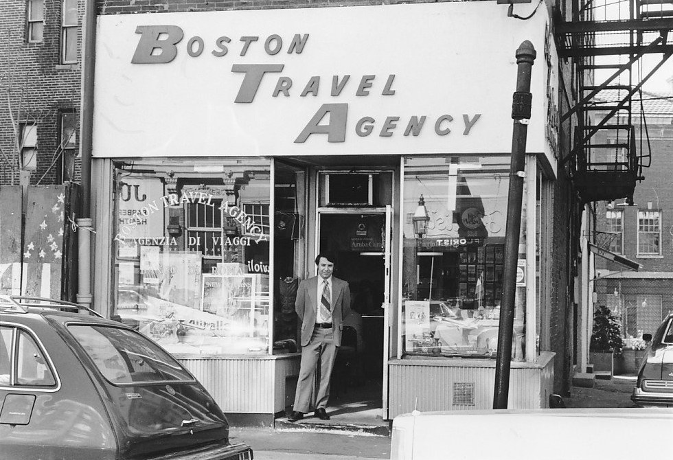
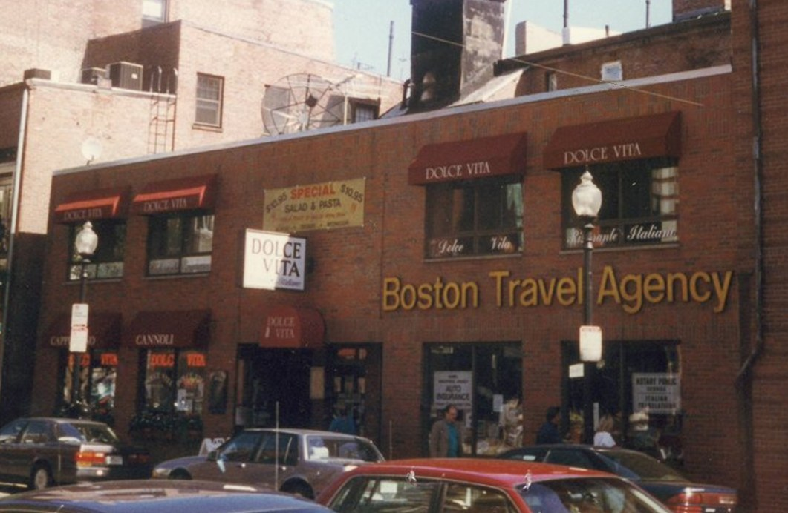
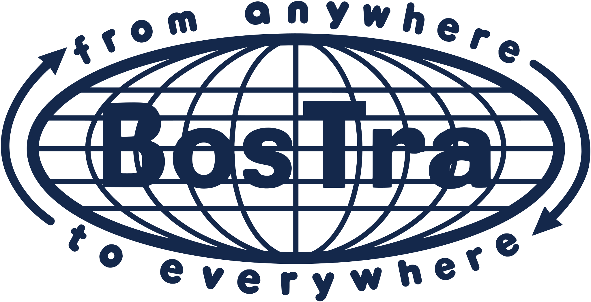

About us
A family-run travel agency since 1969.
Photo: Ajay Suresh, CC BY 4.0
Boston Travel Agency was founded in 1969 in Boston's North End by a family who had made the journey from Italy themselves. In those years the neighborhood was home to thousands of Italian immigrants, and the agency became the place they turned to for travel between their two worlds: trips back to Italy for family celebrations, long-awaited visits to the towns they had left, and relatives making their way to Boston for the first time.


Nearly six decades later, we're still family-run, and we still plan travel the same personal way: bespoke, private trips around the world, with Italy closest to our hearts. That work is reserved for our longtime clients and the families they refer, so it isn't something we offer through this website.

From anywhere to everywhere: our motto then and now.
Because Boston is where our story began, and we never stopped loving it. This is the city where our family planted its roots, and we've spent a lifetime collecting its best walks, bites, traditions and hidden corners.
Boston is also one of the easiest and most rewarding cities in the world to explore on your own. It's compact and walkable, there's history on nearly every corner, the neighborhoods each have their own personality, and the food is worth the trip by itself. You don't need a travel agent to have a wonderful time here. You just need a few good tips from people who know it well.
So consider these guides our gift to anyone who wants to come visit, learn, and love Boston as much as we do. Everything here is free to use. Start with our sample itineraries, check the events calendar, find out what to eat, or spend a day on the Boston Selfie Hunt. When you find a tour you like, you can book it directly and securely through Viator.
Benvenuti a Boston. We hope you fall for it the way we did.